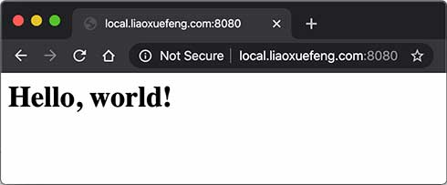

- Java EE（Java Platform, Enterprise Edition，现多称 Jakarta EE）是一套用于构建企业级 Web 应用和分布式系统的 Java 规范与组件集合。它提供了标准化的 API 与运行时约定，让你用一致的方式开发：网站后端、REST 服务、微服务（传统上更偏单体/应用服务器）、消息处理、事务、权限控制等。
核心能力 1. Web 开发：Servlet、JSP（较旧）、JSF（较少新项目用） 2. REST API：JAX-RS（Jakarta REST） 3. 依赖注入：CDI 4. 持久层/ORM：JPA（结合 Hibernate/EclipseLink 等实现） 5. 事务管理：JTA 6. 安全认证授权：Java EE Security / Jakarta Security 7. 消息队列：JMS 8. 企业组件（传统）：EJB（现在很多项目用得少，但规范仍存在）
什么是JavaEE？JavaEE是Java Platform Enterprise Edition的缩写，即Java企业平台。我们前面介绍的所有基于标准JDK的开发都是JavaSE，即Java Platform Standard Edition。此外，还有一个小众不太常用的JavaME：Java Platform Micro Edition，是Java移动开发平台（非Android），它们三者关系如下：
┌────────────────┐
│ JavaEE │
│┌──────────────┐│
││ JavaSE ││
││┌────────────┐││
│││ JavaME │││
││└────────────┘││
│└──────────────┘│
└────────────────┘
今天我们访问网站，使用App时，都是基于Web这种Browser/Server模式，简称BS架构，它的特点是，客户端只需要浏览器，应用程序的逻辑和数据都存储在服务器端。浏览器只需要请求服务器，获取Web页面，并把Web页面展示给用户即可。
Web页面具有极强的交互性。由于Web页面是用HTML编写的，而HTML具备超强的表现力，并且，服务器端升级后，客户端无需任何部署就可以使用到新的版本，因此，BS架构升级非常容易。
HTTP 协议
编写 HTTP Server
我们来看一下如何编写HTTP Server。一个HTTP Server本质上是一个TCP服务器，我们先用TCP编程的多线程实现的服务器端框架：
public class Server {
public static void main(String[] args) throws IOException {
ServerSocket ss = new ServerSocket(8080); // 监听指定端口
System.out.println("server is running...");
for (;;) {
Socket sock = ss.accept();
System.out.println("connected from " + sock.getRemoteSocketAddress());
Thread t = new Handler(sock);
t.start();
}
}
}
class Handler extends Thread {
Socket sock;
public Handler(Socket sock) {
this.sock = sock;
}
public void run() {
try (InputStream input = this.sock.getInputStream()) {
try (OutputStream output = this.sock.getOutputStream()) {
handle(input, output);
}
} catch (Exception e) {
} finally {
try {
this.sock.close();
} catch (IOException ioe) {
}
System.out.println("client disconnected.");
}
}
private void handle(InputStream input, OutputStream output) throws IOException {
var reader = new BufferedReader(new InputStreamReader(input, StandardCharsets.UTF_8));
var writer = new BufferedWriter(new OutputStreamWriter(output, StandardCharsets.UTF_8));
// TODO: 处理HTTP请求
}
}
只需要在 handle() 方法中，用 Reader 读取 HTTP 请求，用 Writer 发送 HTTP 响应，即可实现一个最简单的HTTP服务器。编写代码如下：
private void handle(InputStream input, OutputStream output) throws IOException {
System.out.println("Process new http request...");
var reader = new BufferedReader(new InputStreamReader(input, StandardCharsets.UTF_8));
var writer = new BufferedWriter(new OutputStreamWriter(output, StandardCharsets.UTF_8));
// 读取HTTP请求:
boolean requestOk = false;
String first = reader.readLine();
if (first.startsWith("GET / HTTP/1.")) {
requestOk = true;
}
for (;;) {
String header = reader.readLine();
if (header.isEmpty()) { // 读取到空行时, HTTP Header读取完毕
break;
}
System.out.println(header);
}
System.out.println(requestOk ? "Response OK" : "Response Error");
if (!requestOk) {
// 发送错误响应:
writer.write("HTTP/1.0 404 Not Found\r\n");
writer.write("Content-Length: 0\r\n");
writer.write("\r\n");
writer.flush();
} else {
// 发送成功响应:
String data = "<html><body><h1>Hello, world!</h1></body></html>";
int length = data.getBytes(StandardCharsets.UTF_8).length;
writer.write("HTTP/1.0 200 OK\r\n");
writer.write("Connection: close\r\n");
writer.write("Content-Type: text/html\r\n");
writer.write("Content-Length: " + length + "\r\n");
writer.write("\r\n"); // 空行标识Header和Body的分隔
writer.write(data);
writer.flush();
}
}
这里的核心代码是，先读取HTTP请求，这里我们只处理GET /的请求。当读取到空行时，表示已读到连续两个\r\n，说明请求结束，可以发送响应。发送响应的时候，首先发送响应代码HTTP/1.0 200 OK表示一个成功的200响应，使用HTTP/1.0协议，然后，依次发送Header，发送完Header后，再发送一个空行标识Header结束，紧接着发送HTTP Body，在浏览器输入http://local.liaoxuefeng.com:8080/就可以看到响应页面：

HTTP目前有多个版本，1.0是早期版本，浏览器每次建立TCP连接后，只发送一个HTTP请求并接收一个HTTP响应，然后就关闭TCP连接。由于创建TCP连接本身就需要消耗一定的时间，因此，HTTP 1.1允许浏览器和服务器在同一个TCP连接上反复发送、接收多个HTTP请求和响应，这样就大大提高了传输效率。
我们注意到HTTP协议是一个请求-响应协议，它总是发送一个请求，然后接收一个响应。能不能一次性发送多个请求，然后再接收多个响应呢？HTTP 2.0可以支持浏览器同时发出多个请求，但每个请求需要唯一标识，服务器可以不按请求的顺序返回多个响应，由浏览器自己把收到的响应和请求对应起来。可见，HTTP 2.0进一步提高了传输效率，因为浏览器发出一个请求后，不必等待响应，就可以继续发下一个请求。
HTTP 3.0为了进一步提高速度，将抛弃TCP协议，改为使用无需创建连接的UDP协议，目前HTTP 3.0仍然处于实验阶段。